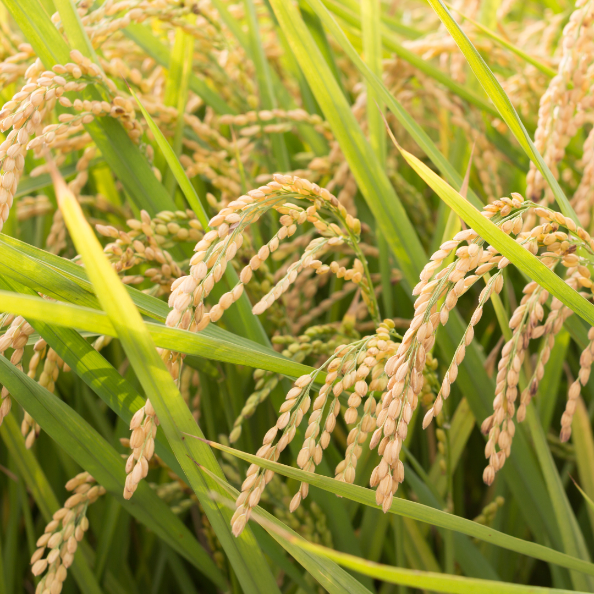
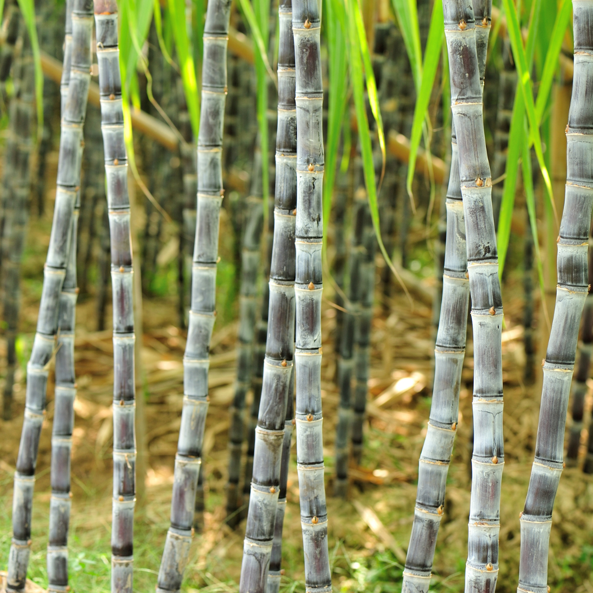

< Hasil Rekomendasi Tanaman
⚙️ Memproses data tanah... Mohon tunggu sebentar.

Tanaman Padi (Oryza sativa)
🏗️ 1. Persiapan Lahan
- Bersihkan lahan dari sisa jerami dan rumput liar (gulma).
- Genangi lahan dengan air selama 1-2 minggu untuk melunakkan tanah.
- Bajak tanah sedalam 20-25 cm hingga menjadi lumpur halus.
- Berikan pupuk organik (kompos/manure) sebagai pupuk dasar.
- Ratakan permukaan tanah agar distribusi air nantinya merata.
🌱 2. Pemilihan Bibit
- Gunakan benih bersertifikat dengan daya tumbuh di atas 90%.
- Rendam benih dalam air garam; buang benih yang mengapung.
- Rendam benih pilihan dalam air bersih selama 24-48 jam.
- Semai benih di bedengan khusus selama 15-20 hari hingga berdaun 3-4 helai.
🌾 3. Penanaman
- Pindahkan bibit dari persemaian ke sawah dengan hati-hati.
- Tanam 2-3 bibit per lubang tanam dengan kedalaman 2-3 cm.
- Gunakan sistem Jajar Legowo (2:1) untuk sirkulasi udara yang lebih baik.
- Pastikan kondisi tanah dalam keadaan macak-macak (basah lembap).
💧 4. Perawatan & Pemupukan
- Lakukan penyulaman (mengganti bibit mati) maksimal 7 hari setelah tanam.
- Cabut rumput liar secara manual atau dengan alat (matun) setiap 3 minggu.
- Berikan pupuk Urea, SP-36, dan KCl sesuai fase pertumbuhan (vegetatif & generatif).
- Atur ketinggian air: genangi saat awal tanam, keringkan saat fase pengisian bulir.
- Waspadai serangan tikus, burung, dan wereng coklat.

Tanaman Tebu (Saccharum officinarum)
🏗️ 1. Persiapan Lahan
- Pilih lahan terbuka yang terpapar sinar matahari penuh sepanjang hari.
- Buat saluran drainase yang baik agar air tidak menggenang di akar.
- Buat lubang tanam memanjang (juringan) dengan kedalaman 25-30 cm.
- Lakukan pengapuran (Dolomit) jika pH tanah terlalu asam (di bawah 5.5).
🌱 2. Pemilihan Bibit
- Gunakan bibit stek batang yang memiliki 2-3 mata tunas yang sehat.
- Pastikan bibit berasal dari tanaman induk berumur 6-8 bulan.
- Rendam stek dalam air panas (50°C) selama 10 menit untuk mencegah jamur.
- Pastikan kulit stek tidak keriput dan mata tunas menonjol segar.
🎋 3. Penanaman
- Letakkan stek secara mendatar di dasar juringan secara bersambung.
- Tutup stek dengan tanah setebal 5-7 cm saja.
- Pastikan mata tunas menghadap ke samping atau ke atas.
- Waktu tanam terbaik adalah awal musim kemarau dengan bantuan irigasi.
💧 4. Perawatan & Pemupukan
- Lakukan pembumbunan (penimbunan tanah) agar batang tebu tidak mudah roboh.
- Lakukan "Klentek" (membuang daun kering) untuk mempercepat pematangan batang.
- Berikan pupuk kaya Nitrogen di awal pertumbuhan dan Kalium di fase akhir.
- Lakukan pengairan berkala, terutama saat fase pertumbuhan batang tercepat.
- Kendalikan hama penggerek batang dengan agen hayati atau pestisida tepat dosis.

Tanaman Jagung (Zea mays)
🏗️ 1. Persiapan Lahan
- Gemburkan tanah dengan cangkul atau traktor sedalam 15-20 cm.
- Buat bedengan jika lahan cenderung basah untuk mencegah busuk akar.
- Campurkan pupuk kandang sebanyak 1-2 ton per hektar sebagai nutrisi dasar.
- Bersihkan gulma agar tidak berebut nutrisi dengan bibit jagung.
🌱 2. Pemilihan Bibit
- Gunakan benih varietas hibrida atau unggul yang sesuai dengan ketinggian lokasi.
- Pastikan benih sudah diberi perlakuan (seed treatment) fungisida.
- Pilih benih yang memiliki ukuran seragam untuk pertumbuhan yang rata.
- Pastikan kemasan benih belum kedaluwarsa untuk menjamin daya tumbuh.
🌽 3. Penanaman
- Tanam dengan sistem tugal (lubang kecil) sedalam 3-5 cm.
- Isi 1-2 biji per lubang tanam.
- Gunakan jarak tanam ideal (75 cm x 20 cm) agar sinar matahari masuk optimal.
- Tutup lubang dengan tanah tipis tanpa perlu dipadatkan secara berlebihan.
💧 4. Perawatan & Pemupukan
- Lakukan penyiraman setiap 2-3 hari sekali (tergantung kelembapan tanah).
- Berikan pupuk pertama pada umur 10-15 HST (Hari Setelah Tanam).
- Lakukan pendangiran (pembubunan tanah) bersamaan dengan pemupukan kedua.
- Monitor ulat grayak (Spodoptera) pada daun muda jagung setiap pagi.
- Pastikan lahan bersih dari rumput liar selama 6 minggu pertama pertumbuhan.